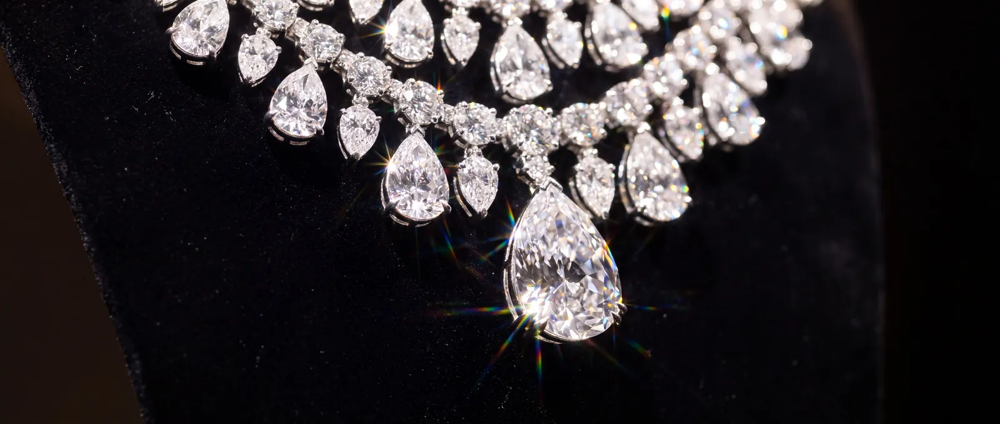

Room I of VII
Aurora
Diamond waterfall bib
About Aurora
- 212
- diamonds
- 141.6 ct
- in total
- 30.08 ct
- D flawless pear
Five tiers that fall like light running down a wall, ending in one pear shaped diamond that seems to hold the whole fall in a drop.
Why it is rareA D colour, internally flawless pear above 30 carats reaches the market only a handful of times in a decade.
The pear was cut from a rough of 71 carats over eleven months. The cutter would only work on it in the morning, when the north light in his room was even, and stopped each day at noon.
Every one of the 212 stones below it was chosen to lead the eye downward. The tiers are articulated on fine platinum hinges, so the necklace moves like water when it is worn and lies perfectly still on the bust.
- Metal
- Platinum
- Diamonds
- 212 pear and round brilliants, 141.6 carats in total
- Centre stone
- Pear shape, 30.08 carats, D colour, internally flawless
- Hours at the bench
- 2,140
- Room
- I, the grey marble salon